shop now
on
karnataka spices
Every region is a new dialect of flavor,
from coastal richness to highland simplicity.
the quiet mornings of Malnad, mist rolls over green hills as kitchens awaken to the aroma of steaming akki rotti and fresh coconut chutney
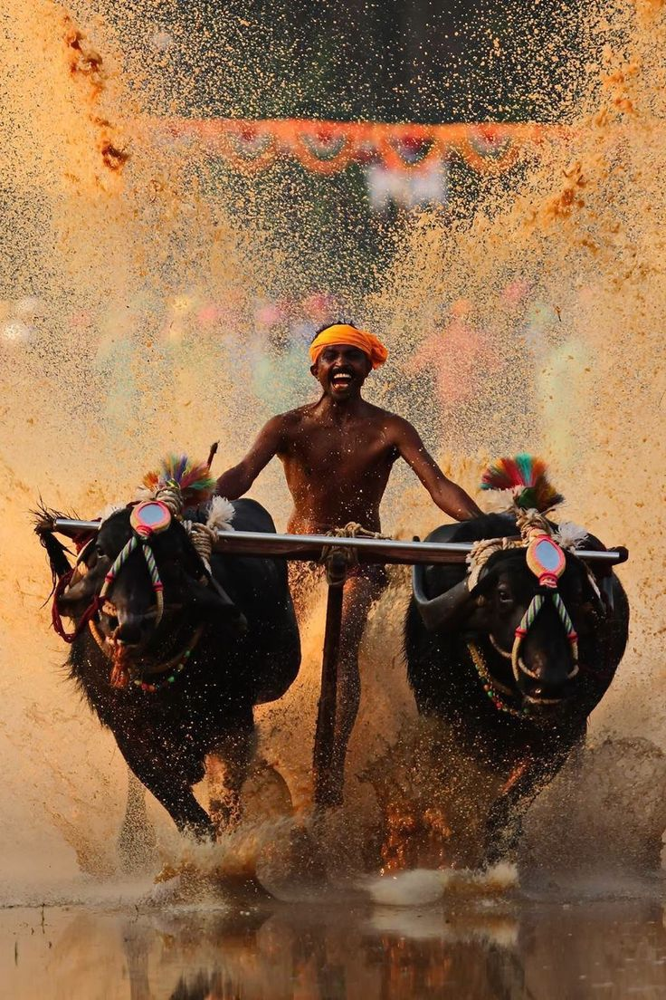
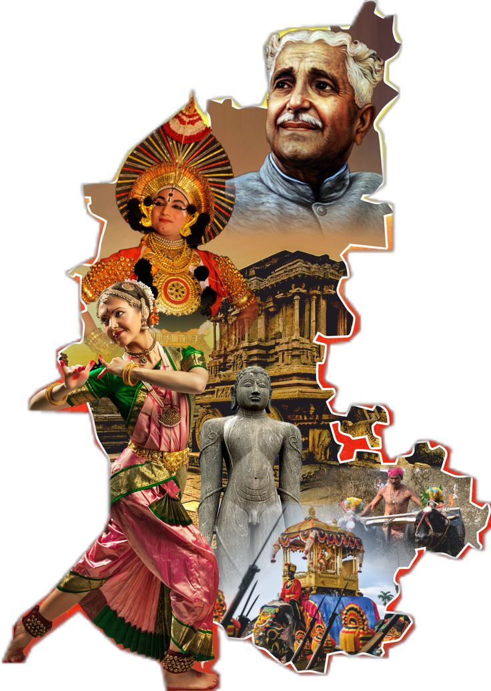
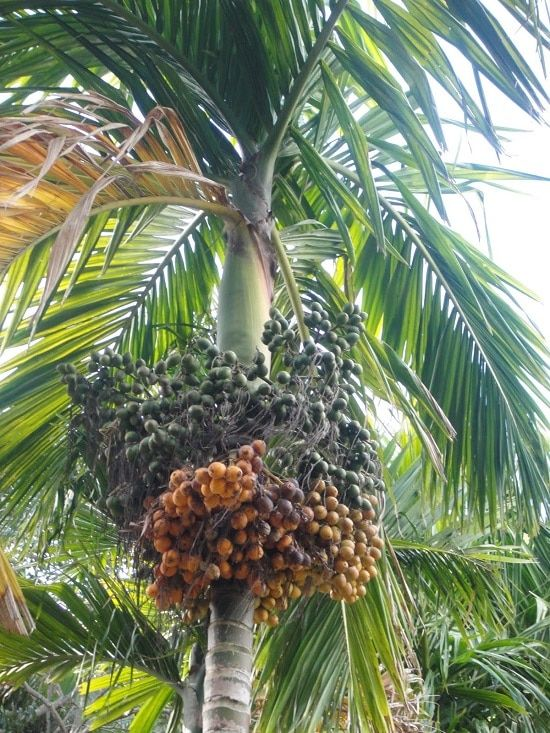
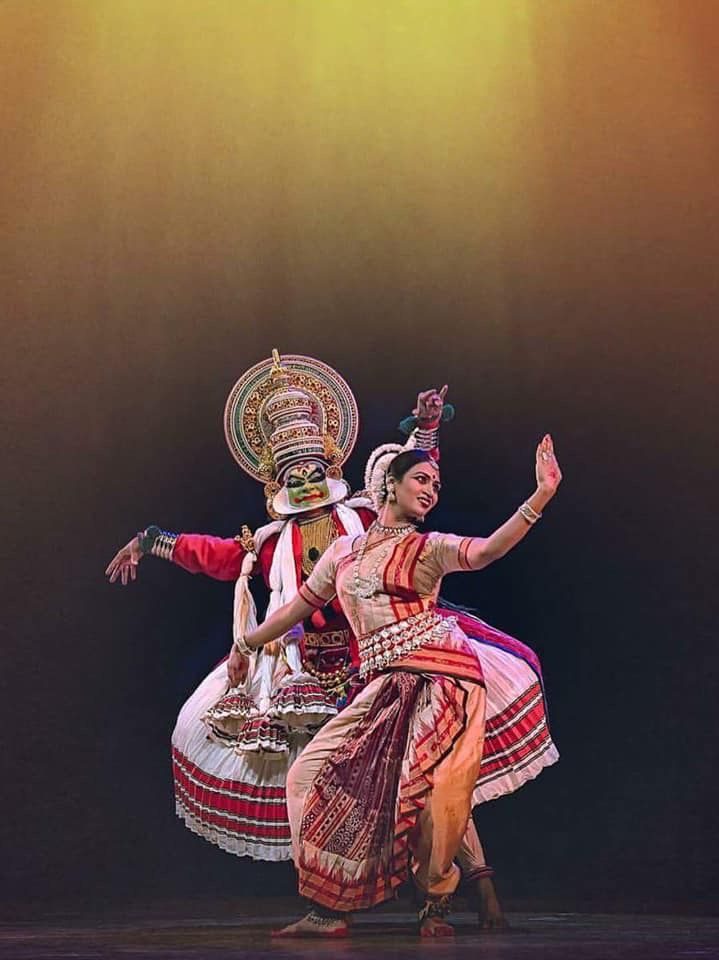
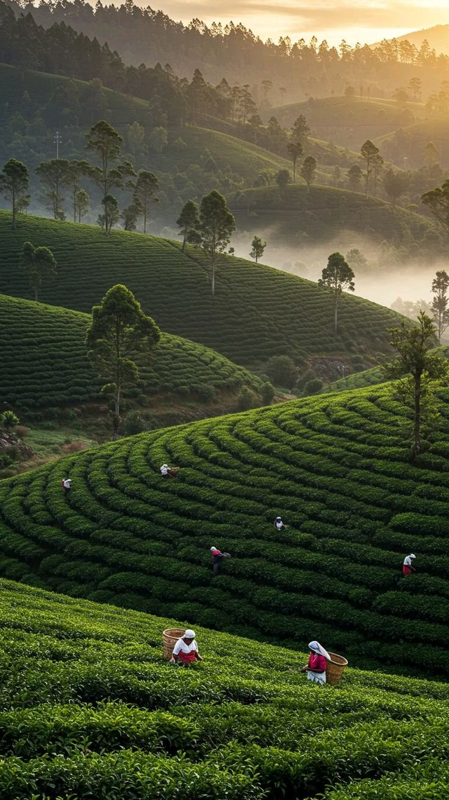
Simple on the surface, but deeply rooted in tradition and nutrition, these foods define the true taste of Karnataka.
Bisi Bele Bath
A complete meal in itself. Rice, lentils, vegetables, and spices cooked into a thick, comforting dish that’s both filling and flavorful.
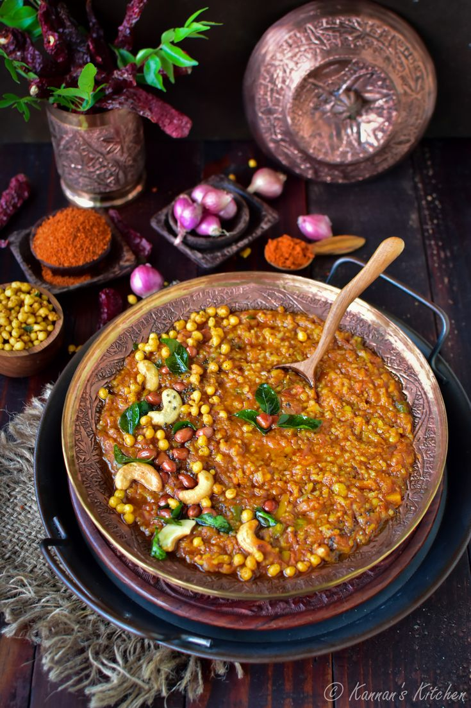
Ragi Mudde
A powerhouse staple, especially in rural areas. Made from finger millet, it’s eaten with sambar or saaru and valued for strength and health.
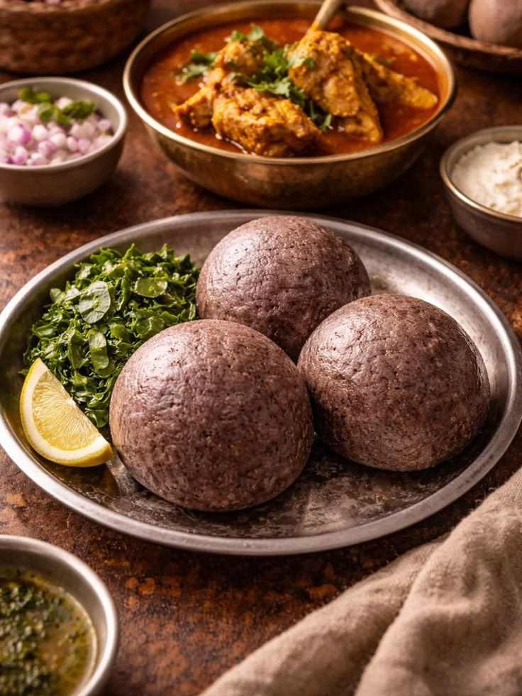
Jolada Rotti
The backbone of North Karnataka meals. This soft flatbread pairs with spicy curries like ennegayi and is eaten daily in many homes.
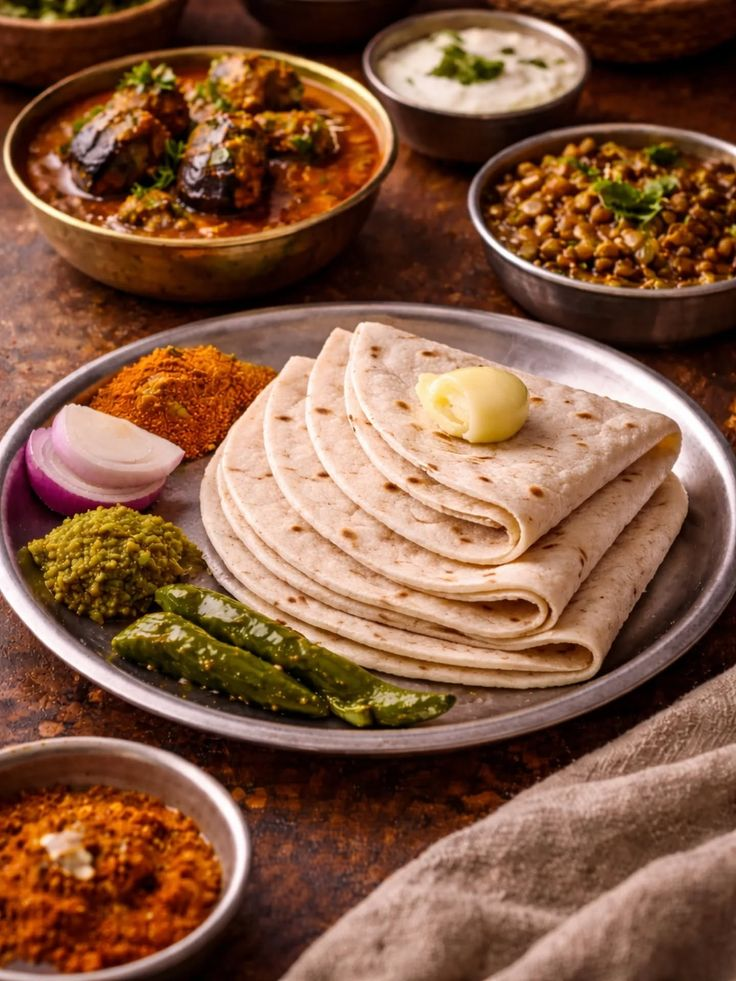
Crisp, golden, and iconic. Though famous everywhere, its roots in Karnataka (especially Udupi) make it a daily breakfast favorite.
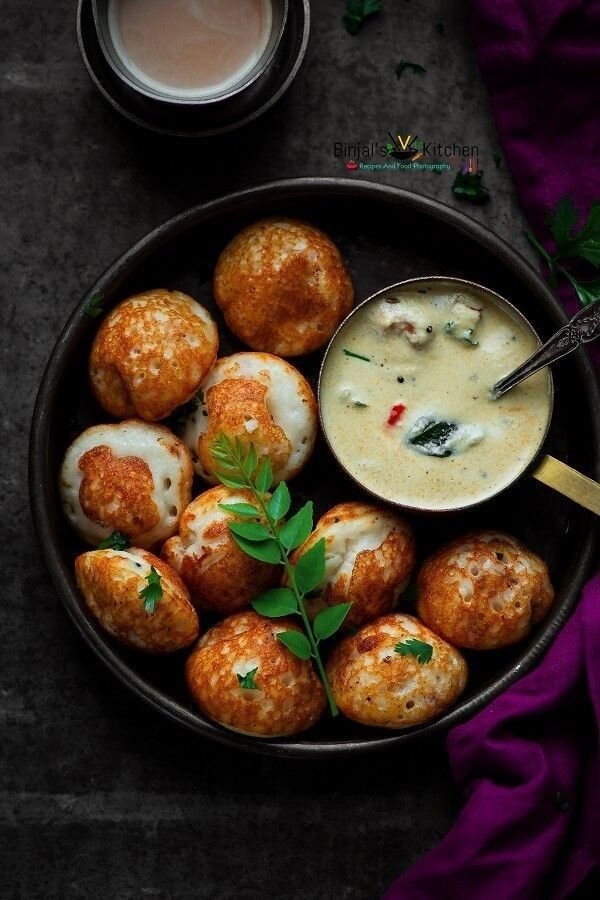
sweets are not just desserts they are identity, pride, and celebration packed into every bite
Mysore Pak
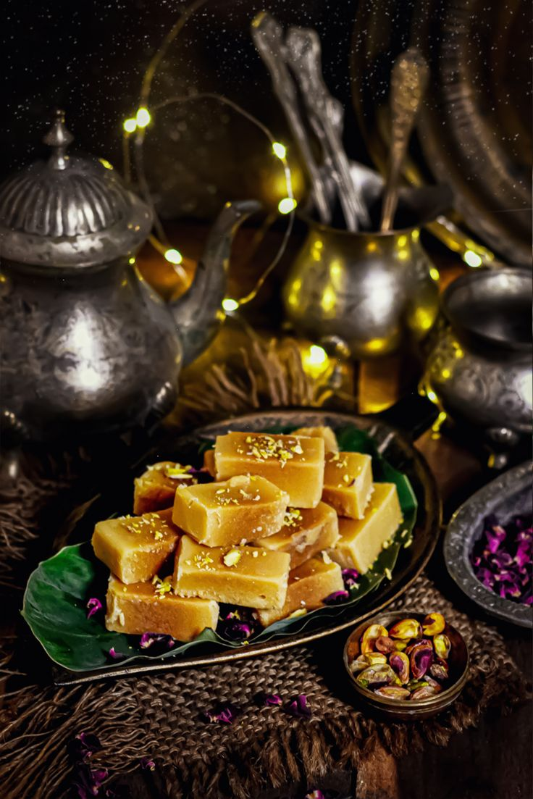
The crown jewel from Mysuru. Made from ghee, sugar, and gram flour, it’s famous for its melt-in-the-mouth texture.
Dharwad Peda
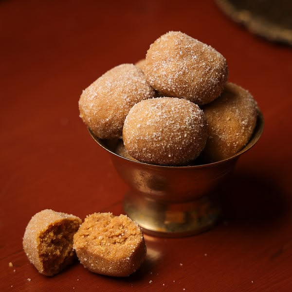
A deep, caramelized milk sweet from Dharwad, known for its slightly grainy texture and rich taste.
Holige
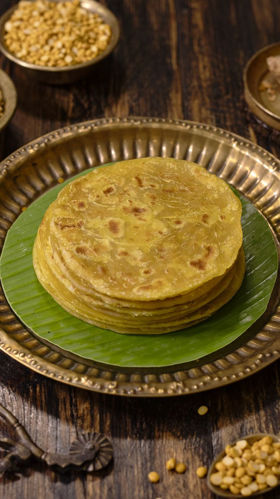
A festive favorite across the state. Soft flatbread stuffed with jaggery and lentil or coconut filling, often served with ghee or sweet syrup.
Kesari Bath
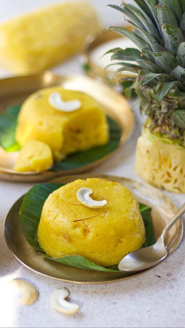
A simple yet aromatic semolina sweet, flavored with saffron and cardamom,eaten for breakfast or special occasions.
“Smoke, Spice, and Strength The Essence of Coorg Cuisine”
Kadumbuttu
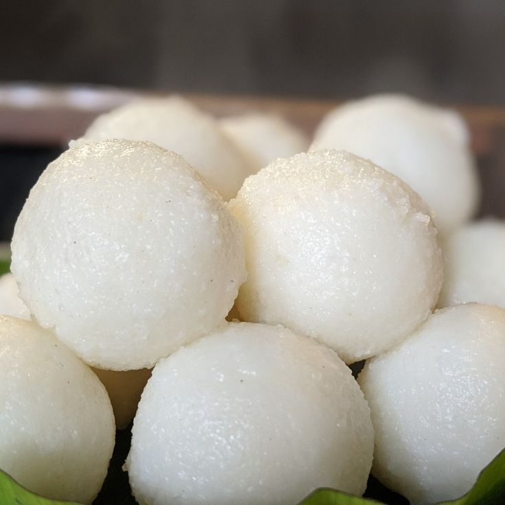
Soft rice dumplings, simple but perfect with meat curries like pandi curry.
Bamboo Shoot Curry
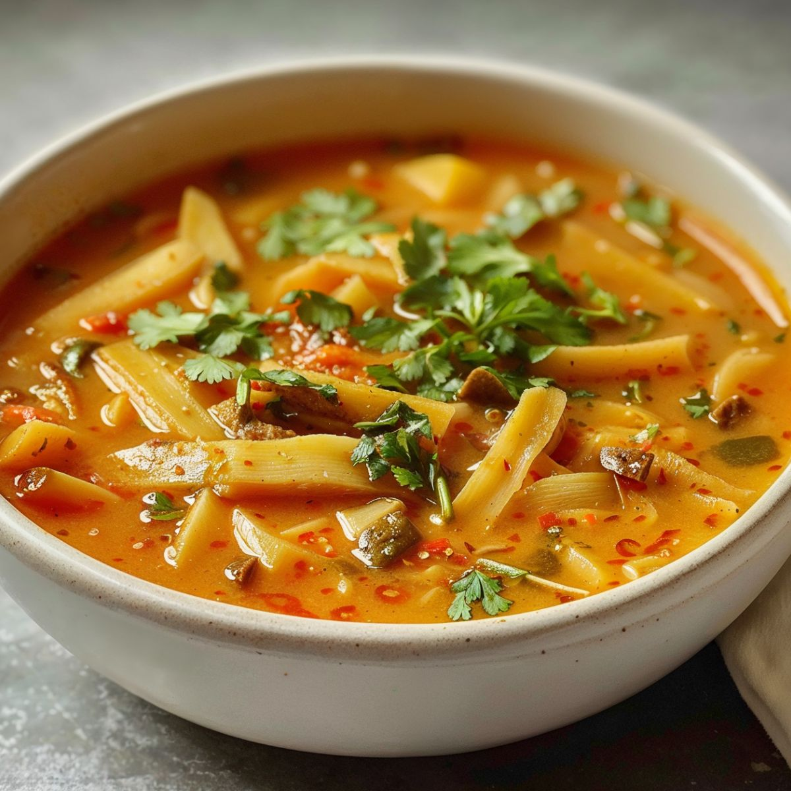
Earthy and unique, often prepared during monsoon season, bringing a distinct wild flavor.
Noolputtu
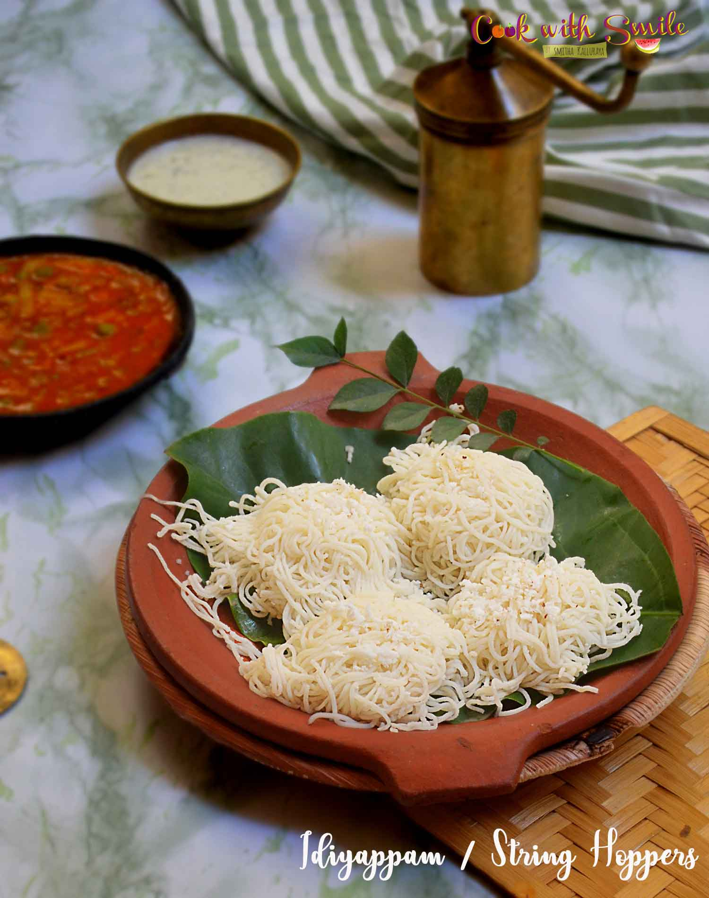
String hoppers made from rice, light yet filling, paired with curries or coconut milk.